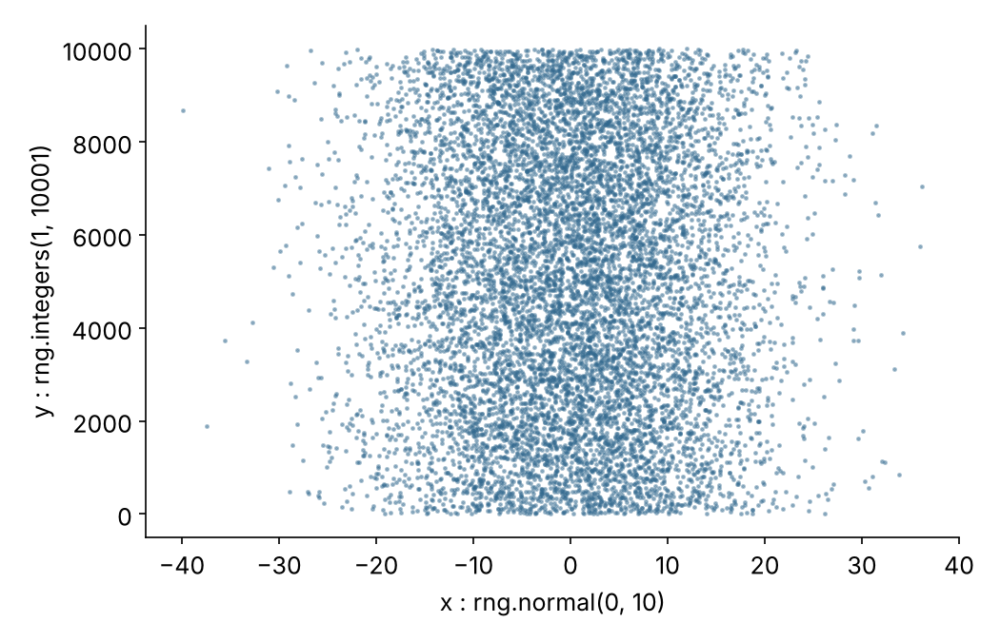
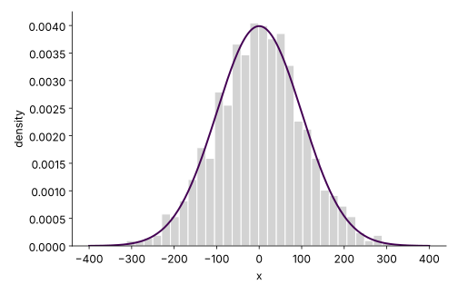
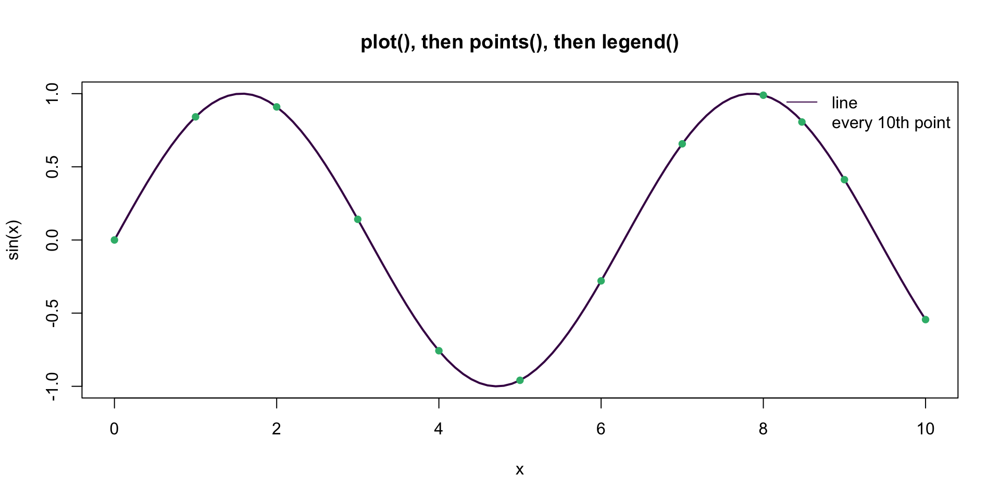
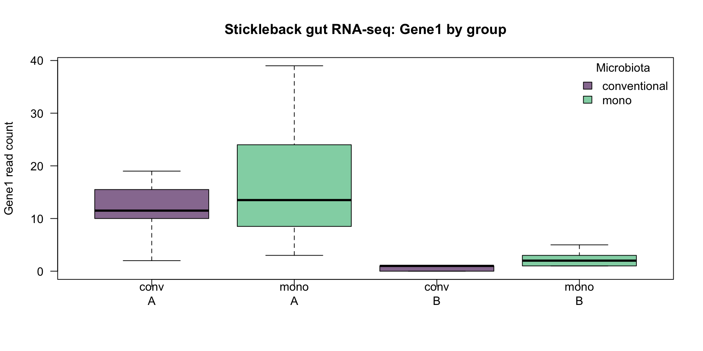
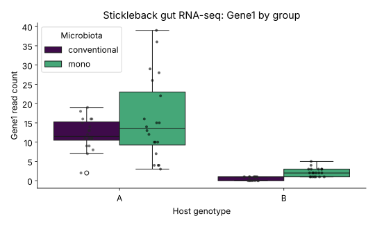

[1] 80 604 Individual Genotype Microbiota Geno&Micro Gene1
1 AC1 A conventional convA 16
2 AC2 A conventional convA 7R and Python Fundamentals 2: Files, Data Frames, Distributions and Figures
2026-11-02
The course book goes deeper on everything in this lecture. Read before or after class:
Figure 1: Left: four genes, every fish, split by genotype and microbiota. Right: mean vs. variance for all 600 genes at once. About 20 lines of R, starting from the raw TSV.
Last week ended with indexing - today builds straight on it. The one-slide version:
| Job | R | Python |
|---|---|---|
| One column | df$col · df[["weird name"]] |
df["col"] |
| Rows and cells | df[1:5, c("a", "b")] · df[3, 2] |
df.loc[0:4, ["a", "b"]] · df.iloc[2, 1] |
| Rows by condition | df[df$g == "A", ] |
df[df["g"] == "A"] |
[1] 80 604 Individual Genotype Microbiota Geno&Micro Gene1
1 AC1 A conventional convA 16
2 AC2 A conventional convA 7import pandas as pd
# pd.read_csv handles both - sep="\t" makes it tab-separated
stickle = pd.read_csv("../Data_Folder/Stickle_RNAseq.tsv", sep="\t")
stickle.shape # (rows, columns)
# (80, 604)
stickle.iloc[0:2, 0:5]
# pandas reads URLs directly - handy for course data:
# stickle = pd.read_csv("https://wcresko.github.io/BioE_Comp_Tools_Fa2026/Data_Folder/Stickle_RNAseq.tsv", sep="\t")header) and what separates the values? (sep)check.names = FALSE, R “fixes” Geno&Micro to Geno.Micro - fine, until your column names no longer match the fileread.table(..., row.names = 1) / pd.read_csv(..., index_col=0) when the file’s first column holds row labels rather than datareadr (read_tsv(), faster and friendlier) takes over next week in L07row.names = FALSE / index=False - otherwise both languages sneak an extra unnamed column of row numbers into your fileresults/ or output/; never overwrite anything in data/ (raw data is read-only - the L01 project structure exists for exactly this reason)| Format | R | Python |
|---|---|---|
| CSV / TSV (plain text) | read.csv() / write.csv() |
pd.read_csv() / .to_csv() |
Excel .xlsx |
readxl::read_excel() / writexl |
pd.read_excel() / .to_excel() |
| Plain text, line by line | readLines() / writeLines() |
Path.read_text(), open() |
| JSON | jsonlite::fromJSON() |
json.load(), pd.read_json() |
| Native binary objects | saveRDS() / readRDS() |
pickle |
| Big columnar data | arrow::read_parquet() |
pd.read_parquet() |
grep/awk, and diff-able in Git.rds, .pickle, .parquet) are faster and preserve types exactly - but only their own language (or ecosystem) can read themThe warm-up scripts already showed the whole pattern - here it is as a checklist:
infile <- "data/Stickle_RNAseq.tsv" # 1. relative path from the project root
if (!file.exists(infile)) { # 2. check before reading,
cat("Error: File", infile, "not found!\n")
quit(status = 1) # fail loudly with an exit status
}
stickle <- read.delim(infile, check.names = FALSE) # 3. read
# ... compute ...
dir.create("results", showWarnings = FALSE) # 4. make the output folder
write.csv(totals, "results/totals.csv", row.names = FALSE) # 5. write resultsdata/..., results/...) - never /Users/yourname/..., which breaks on every other machine (including Talapas)Path("data/f.tsv"), .is_file(), sys.exit(1), Path("results").mkdir(exist_ok=True), .to_csv()svg("results/boxplot.svg", width = 7, height = 5) # open a file 'device'
boxplot(totals ~ group) # draw into it
dev.off() # close it - ALWAYS
png("results/boxplot.png", width = 7, height = 5,
units = "in", res = 300) # raster needs a resolution
boxplot(totals ~ group)
dev.off()
# pdf("results/boxplot.pdf", ...) works the same way
# ggplot figures: ggsave("results/boxplot.svg") - coming in L07.svg, .pdf) scale forever - use them for papers and posters; raster formats (.png, 300 dpi) for slides and the webdev.off() (forget dev.off() and the file is empty or locked); matplotlib’s is simply plt.savefig()r* functions - rnorm(), runif(), rpois(), rbinom() - that draw random numbers from named distributions; sample() draws from anything you give itrng = np.random.default_rng(2026) (the number is the seed, like set.seed(2026) in R)import numpy as np
import matplotlib.pyplot as plt
rng = np.random.default_rng(2026)
x = rng.normal(0, 10, 10000) # rnorm(10000, 0, 10)
y = rng.integers(1, 10001, size=10000) # sample(1:10000, ..., replace = TRUE)
plt.scatter(x, y, s=2, alpha=0.4, color="#31688e")
plt.xlabel("x : rng.normal(0, 10)"); plt.ylabel("y : rng.integers(1, 10001)")
plt.show()

freq = FALSE / density=True puts the bars on the density scale, so the theoretical curve (dnorm() / norm.pdf()) drops straight on top - no magic scaling constantshist() is a high-level call (starts a fresh figure); curve(..., add = TRUE) is a low-level call (draws onto the open one)set.seed(2026); n <- 2000
par(mfrow = c(2, 2), mar = c(4, 4, 2, 1)) # a 2 x 2 grid of panels
hist(rnorm(n, 50, 10), breaks = 40, col = "#440154", border = "white",
main = "Normal(50, 10)", xlab = "value")
hist(runif(n, 0, 100), breaks = 40, col = "#31688e", border = "white",
main = "Uniform(0, 100)", xlab = "value")
hist(rpois(n, 5), breaks = seq(-0.5, 20.5, 1), col = "#35b779",
border = "white", main = "Poisson(5)", xlab = "count")
hist(rbinom(n, 20, 0.3), breaks = seq(-0.5, 20.5, 1), col = "#fde725",
border = "white", main = "Binomial(20, 0.3)", xlab = "successes")n = 2000
draws = {"Normal(50, 10)": rng.normal(50, 10, n),
"Uniform(0, 100)": rng.uniform(0, 100, n),
"Poisson(5)": rng.poisson(5, n),
"Binomial(20, 0.3)": rng.binomial(20, 0.3, n)}
fig, ax = plt.subplots(2, 2, figsize=(8, 6)) # the grid, as an array of axes
for a, (name, d), c in zip(ax.flat, draws.items(),
["#440154", "#31688e", "#35b779", "#fde725"]):
a.hist(d, bins=40, color=c, edgecolor="white")
a.set_title(name)
fig.tight_layout()
plt.show()
par(mfrow = c(2, 2)) splits the plotting device into panels; each high-level call fills the next one (plt.subplots(2, 2) hands Python the grid as an array of axes)n, the parameters and breaks - this one figure is a little simulation labplot(), hist(), boxplot(), barplot()points(), lines(), curve(add = TRUE), legend(), text()type = (points vs. lines), col =, pch = (point shape), lwd = (line width), xlab = / ylab = / main =seq_1 <- seq(0, 10, by = 0.1)
plot(seq_1, sin(seq_1), type = "l", lwd = 2, col = "#440154",
xlab = "x", ylab = "sin(x)", main = "plot(), then points(), then legend()")
points(seq_1[seq(1, 101, by = 10)], sin(seq_1)[seq(1, 101, by = 10)],
pch = 16, col = "#35b779")
legend("topright", legend = c("line", "every 10th point"),
col = c("#440154", "#35b779"), lty = c(1, NA), pch = c(NA, 16), bty = "n")
seq_1 = np.linspace(0, 10, 101)
plt.plot(seq_1, np.sin(seq_1), lw=2, color="#440154") # the line
plt.plot(seq_1[::10], np.sin(seq_1)[::10], "o", color="#35b779") # every 10th point
plt.xlabel("x"); plt.ylabel("sin(x)")
plt.title("matplotlib layers the same way")
plt.legend(["line", "every 10th point"])
plt.show()import pandas as pd); it has the same idea - rows are samples, columns are variablescolumn name: valuesmydata = pd.DataFrame({"hydrogel_concentration": hydrogel_concentration,
"compression": compression,
"conductivity": conductivity})
mydata.index = [f"Sample_{i}" for i in range(1, 9)] # row names = the index
mydata.head(3)
# hydrogel_concentration compression conductivity
# Sample_1 low 3.4 0.0
# Sample_2 high 3.4 9.2
# Sample_3 high 8.4 3.8[1] 80 604 Individual Genotype Microbiota Geno&Micro Gene1 Gene2 Gene3
1 AC1 A conventional convA 16 15 71
2 AC2 A conventional convA 7 6 72
3 AC3 A conventional convA 9 8 22
4 AC4 A conventional convA 8 18 15
conventional mono
A 20 20
B 20 20 Min. 1st Qu. Median Mean 3rd Qu. Max.
0.000 1.000 3.500 7.675 12.250 39.000 aggregate()’s formula - response ~ groups - is exactly the formula boxplot() uses, next slidegroup_by() |> summarize() and pandas’ .groupby().agg() generalize this to many statistics at once (L07)boxplot(Gene1 ~ Microbiota + Genotype, data = stickle,
col = c("#44015499", "#35b77999"),
names = c("conv\nA", "mono\nA", "conv\nB", "mono\nB"),
las = 1, xlab = "", ylab = "Gene1 read count",
main = "Stickleback gut RNA-seq: Gene1 by group")
legend("topright", fill = c("#44015499", "#35b77999"), title = "Microbiota",
legend = c("conventional", "mono"), bty = "n")
import seaborn as sns
sns.boxplot(data=stickle, x="Genotype", y="Gene1", hue="Microbiota",
palette=["#440154", "#35b779"])
sns.stripplot(data=stickle, x="Genotype", y="Gene1", hue="Microbiota",
dodge=True, size=4, alpha=0.6, palette="dark:black", legend=False)
plt.xlabel("Host genotype"); plt.ylabel("Gene1 read count")
plt.title("Stickleback gut RNA-seq: Gene1 by group")
plt.show()
scripts/summarize_stickleback.R or .py that reads data/Stickle_RNAseq.tsv, writes a per-group median table for a gene of your choice to results/, and saves today’s distribution gallery to results/distributions.svg and a 300-dpi PNGbreaks) until each panel surprises youWorking versions of the script (R and Python) are on the Examples page - but only look after your own runs.
Tip
s7 (pandas data frames) and s8 (plotting) notebooks on the Examples page are the perfect companions to todayread.delim() / pd.read_csv(); write results into results/, never over raw data; save figures as vector SVG/PDF (or 300-dpi PNG for slides)rnorm(), runif(), rpois(), rbinom() and numpy’s rng.* - data-generating machines for testing ideas before touching real datapar(mfrow) / plt.subplots() makes panelssummary(), table(), aggregate() / .describe(), pd.crosstab(), .groupby() answer the first questionspivot_longer() and ggplot2 - we finish the destination figure from the start of todayBioE Computational Tools 2026 - Knight Campus